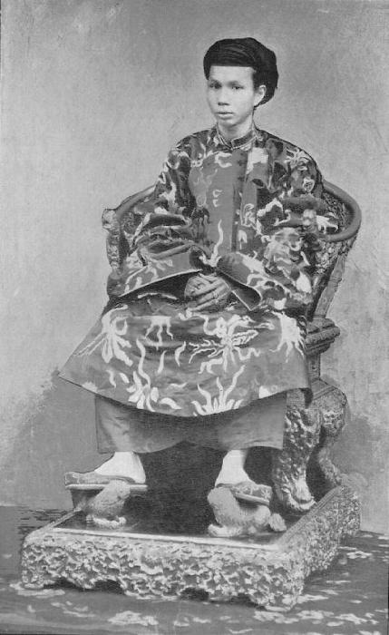

Ngày mồng 6 tháng 8, ông Chánh Mông phải thân hành sang bên tòa Khâm Sứ làm lễ thụ phong, rồi làm lễ tấn tôn, đặt niên hiệu là Đồng Khánh.
Tương truyền khi còn là Hoàng Tử, muốn biết thời điểm nào lên ngôi và làm vua được bao lâu, hoàng tử đã khẩn cầu nữ thần Thiên Y Na ở điện Hòn Chén cho biết. Nữ thần đã đóan đúng ngày Hoàng Tử lên ngôi vua. Sau đó, Đồng Khánh đã xây cất lại ngôi đền này, đặt tên là Huệ Nam Điện.
Đồng Khánh là ông vua đầu tiên của triều Nguyễn thừa nhận nền bảo hộ của Pháp, tiếp xúc với nền văn minh Tây phương, mang huy chương Bắc Đẩu bội tinh, là người đầu tiên gửi mua hàng hóa của Pháp qua trung gian của một thương gia người Pháp ở Huế.
Ông cũng thích mua các đồ chơi do người Pháp chế tạo. Mội lần hàng về, Đồng Khánh ban một phần cho các hoàng thân, các đại thần, cung phi mỹ nữ cùng các thái giám hầu cận.
Trong sinh hoạt thường nhật, nhà vua hay chú ý đến ngoại diện, thường chăm sóc trang điểm. F. Baille kể lại trong bài " Les Annamite " như sau.
- " Hằng ngày một toán cung nữ được chọn trong tất cả đẳng cấp phục dịch Đức vua. Ba mươi người chia nhau canh gác hậu cung của Ngài, năm nàng luôn ở cạnh Ngài, luân phiên săn sóc, trang điểm cho Ngài. Các nàng thay quần áo cho Ngài, chải chuốt bộ móng tay cho dài hơn ngón tay, thoa dầu thơm, vấn khăn lụa chung quanh đầu Ngài. Sau cùng, chú ý đến từng chi tiết nhỏ nhặt quanh Ngài sao cho thật hoàn hảo; năm cung nữ này cũng kiêm lo hầu cơm nước Đức vua.
Thường nhật Ngài dùng ba lần: sáu giờ sáng, mười một giờ trưa và ba giờ chiều. Mội bữa ăn có 50 món khác nhau, do 50 đầu bếp nấu nướng cho hoàng cung. Một người lo nấu một món riêng của mình và khi chuông đổ thì trao cho đám thị vệ đưa qua đoàn thái giám. Các ông này chuyển đến năm cung nữ và chỉ có mấy nàng mới được hân hạnh quỳ gối hầu cơm Đức vua. Ngài nhấm nháp vài món ăn và uống một thứ rượu mạnh đặc biệt chế bằng hột sen và các loại cây có mùi thơm. Đức vua Đồng Khánh còn dùng rượu chát Bordeaux theo lời khuyên của các y sĩ để giúp cho tạng phủ hơi yếu.
Gạo đức vua dùng phải thật trắng và chọn lựa từng hạt, nấu trong nồi đất, mỗi lần nấu xong thì đập bỏ. Đũa vua dùng vót bằng tre vừa mới trổ đủ lá và thay đổ hằng ngày. Loại đủa ngà không tiện dụng vì hơi nặng với tay nhà vua. Số lượng gạo phải được xem kỷ và nấu thật đúng, không bao giờ nhiều hay ít hơn, nếu Đức vua không ăn như ngày thường, nếu ngày thấy không ngon miệng thì Ngài gọi các viên Ngự Y đến xem mạch bốc thuốc. Ngài bắt các y sĩ uống thuốc trước mặt Ngài ".

Di Ảnh Vua Đồng Khánh